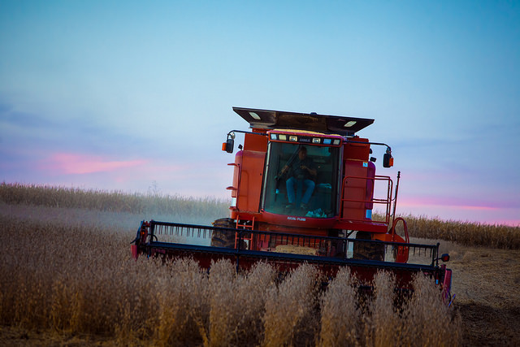

ODI cooks up new focus on agriculture and nutrition
With over 7 billion mouths to feed and a food retail industry worth $4 trillion a year, we are exploring how open data can make our global food system more efficient, from farm to fork
 Up-to-date information and insights are key to how we farm and feed the world, from weather to market prices. CC BY 2.0, uploaded by [Mr. Nixter](https://www.flickr.com/photos/stankus/15565453556/in/photolist-pHt23U-7bLQvf-7Ffi82-8Bpo47-fYNwJj-p8N3Ga-fK9Rb9-gXJgyg-p9kH2w-mp7CD-q8f3z-5hUm67-cRFfEL-fALYRv-5qxp7P-6uSZnC-8NkPRT-8C6SqK-wzEHjC-eWfGEk-aUPVhx-hw4bmm-fB2hD3-gNae7k-qgTYA3-fgUGPj-mVjCo-7a5i6Z-5mS5mJ-aAii2f-58wDQ3-5CEGo-4k1oZL-8zammV-nc9Nz-8DgFcr-ruyF5h-cvK2cQ-fFCZSs-dc9w7D-4edgH7-orLMmp-d49hZw-azFrcX-5upDja-dbwU2K-64J2mY-ffATie-8x3FKi-78s6yY “Mr. Nixter").
One reason why working in open data is so exciting is that it can bring benefits to arguably every industry and sector. At the ODI we see the social, economic and environmental benefits open data can bring in many different contexts, through the work of our global network: members, nodes and startups, along with our own programmes of work.
There are a few areas we focus on in particular, where we know that with dedicated research, collaboration and coverage, we can help fulfil open data’s potential to bring about positive change. In addition to open cities and data infrastructure, one of our new sector themes is agriculture and nutrition.
The global food system is vast and complex. With over seven billion mouths to feed and a food retail industry worth about $4 trillion a year, we depend as much on agriculture for our sustenance as for our economic stability. But with the combined pressures of a growing population, climate uncertainty and volatile market forces, the system is struggling. An estimated 805 million people go to bed hungry each night, and hidden hunger – or micronutrient deficiency – affects an additional 2 billion, according to Thomson Reuters.
Open data: fuelling agricultural intelligence###
Up-to-date information and insights are key to how we farm and feed the world. We believe the only way we can future-proof our global food system is by ensuring that those who produce, trade and buy food are well-informed at each step of the value chain.
Farmers need access to a lot of information – ranging from weather patterns and farming techniques to crop or animal diseases – in order to get the best yields. A growing number of initiatives are being set up to help farmers collect and access data to help promote best practice in the face of unpredictable climates and limited resources.
In many countries, the public sector – often in close collaboration with research institutes – takes a leading role in promoting precision-farming through the release of geospatial data, for example satellite imagery. Government-led initiatives include the United States Department of Agriculture’s nutrient database, California state’s water resource in drought tracking, and the Netherlands’ GroenMonitor.nl project, which exposes and predicts outbreaks of pest infestation or disease on crops.
Similar initiatives also exist within the aid and development sectors as well as the private sector, as businesses are seeing the potential that data can bring to the agricultural industry. A good example is AWhere, a software company that provides agri-weather analytics to farmers around the world, from California’s Central Valley to smallholder farms in Ghana, via apps and SMS messaging.
AWhere sums up this initiative (and those like it) well in defining the ultimate goal as being to bring about an era of “agricultural intelligence”, helping farmers base their decision making not on “best guesses” but from “accessible quantitative data; reducing risk and ambiguity and increasing profit."
Once food has been farmed, those handling it must avoid post-harvest losses brought about by unsuitable storage or transport conditions, or aflatoxins and other diseases spread accidentally by contaminated farming equipment. Up-to-date data shared across accessible formats will be crucial in helping farmers around the world overcome these challenges and ensure food safety. Plantwise helps smallholder farmers deal with plant health issues, combining global and local open access data to provide a knowledge bank used by over 600,000 farmers in 33 countries. Plantwise won the Open Data Award for Social Impact at the ODI Awards, 2014.
Improving access to markets and trading efficiency
Food mostly reaches consumers via markets and trade, contributing to economies and providing a living for those in the industry. Whether small-scale merchants in developing countries or industrial traders across borders, they all need information about markets and prices to trade and make a profit.
There is huge potential for open agriculture data to be analysed, visualised and combined with geographic information systems to help inform farmers, food traders and aid groups alike to buy, sell and target areas in need. The G20-driven Agriculture Market Information System uses open data to monitor and analyse key markets for wheat, maize, rice and soybeans. Its information helped inform responses and decisions during the 2012 drought. Earlier this year, the International Food Policy Research Institute set up a web portal hosting open data and blogs on food and nutrition security, early warning mechanisms and markets in Africa south of the Sahara. Through open information-sharing and dialogue, it aims to boost the resilience of the region’s poor to possible food-related crises, including price and climate shocks. Meanwhile, a range of custom-designed mobile app services built upon some of this data (like MFarm in Kenya) deliver localised market information directly to farmers via mobile technology to help them decide when to sell, which markets to target, while promoting pricing transparency.
With more open data initiatives like these, and ‘infomediaries’ to help ensure that data is translated into accessible information, even those without computer literacy or internet access can benefit from open data in the agriculture and nutrition sector.
Empowering consumers to make better-informed choices
At the other end of the value chain, consumers want to know the risks and nutritional value of the food they eat, and where their food comes from. When data about food nutrients is made open, it can help people make better decisions about the food they eat according to their needs. The USDA National Nutrient Database for Standard Reference provides open nutrient data for more than 8,500 food items, informing individuals, health professionals, nutrition educators and the food industry to help consumers build healthier diets. In the UK, Open Data Challenge Series winner FoodTrade, offers a service to food vendors helping them manage the allergen and dietary content of their menus, and uses this as a starting point to link them to relevant local food producers. It uses a combination of Food Standards Agency data with user input, and also commits to publishing their own open data as well.
How will the ODI help improve agriculture and nutrition with open data?###
The examples outlined here highlight some of the first successful applications of open data for agriculture and nutrition. We believe that with the right research, engagement and buy-in from those in the industry, we can help encourage many more.
Through applied research, open discussion and sector-focused events, we are exploring what works, what the challenges are and what our global priorities should be. In partnership with Global Open Data for Agriculture and Nutrition, we released a paper exploring how we can improve agriculture, food and nutrition with open data, with examples of how open data in different contexts can enable more effective decision making, create innovation and promote transparency that transforms the way organisations work for the better.
To build on this, we are seeking input from experts in the field, engaging them to join the discussion as ODI Members, bloggers and advisors. We want to harness the value of open data to inform decision making, boost innovation and promote transparency in agriculture and nutrition, from farm to fork.
Find out more about our agriculture and nutrition sector focus, and how to join the discussion here.
Anna Scott is Writer/Editor at the ODI. Follow @AnnaDScott on Twitter.
If you have ideas or experience in open data that you'd like to share, pitch us a blog or tweet us at @ODIHQ.